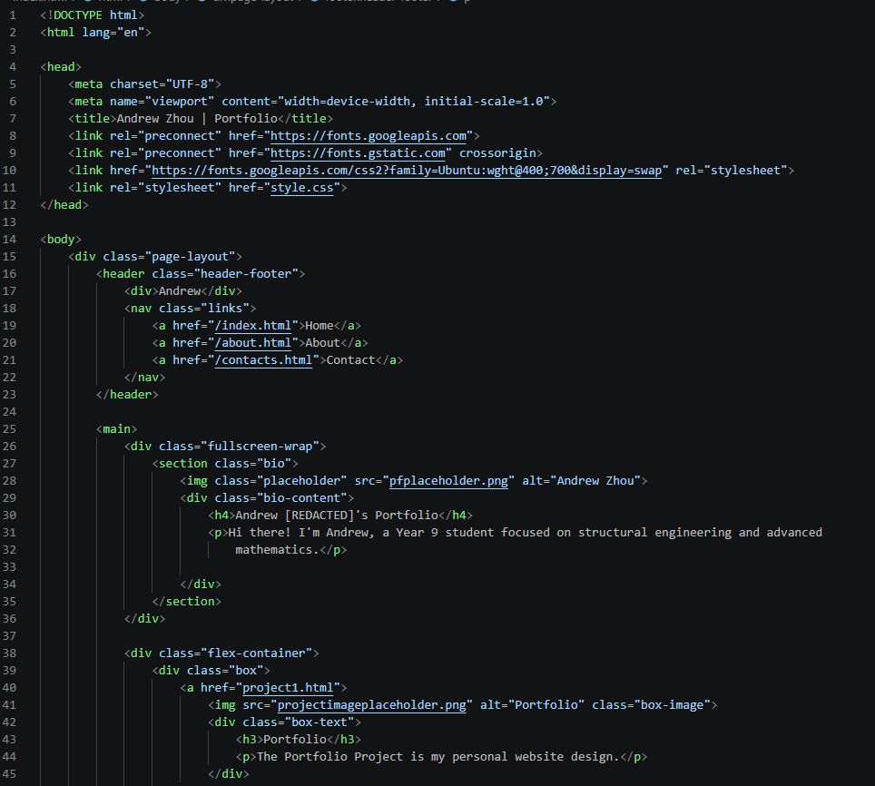
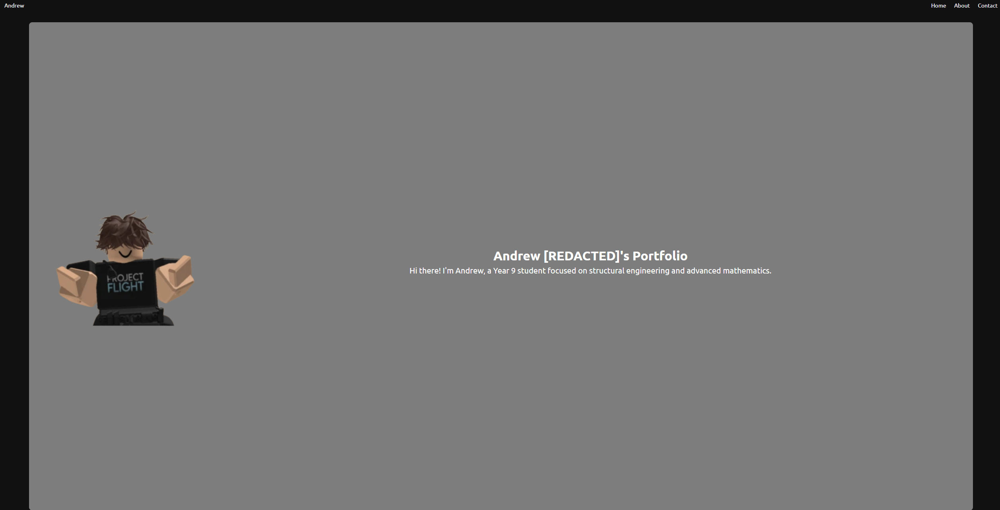
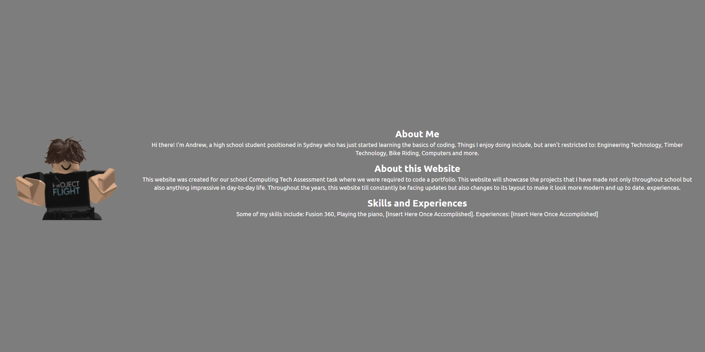

Project 01
Portfolio Website
The website you are currently on — a personal portfolio designed and built from a blank page.
Reflection
This is my Portfolio Project, also known as the website you are currently on. Throughout this project, many things were made, learned and completed. The key skill used in making this website is definitely the application of CSS and HTML coding. One of the things I learnt was how to turn a blank white page into a proper portfolio page with everything that you need in a normal website. Using Visual Studio Code allowed me to experiment with different features and designs.
A major part of the website was getting to know how to properly code HTML and CSS. One of the main things I learnt and used was flexboxes. This is when you make your page adjust its layout with different screen sizes. This was able to be done through the display: flex; code in CSS. After learning this, it's helped me have a better understanding of how CSS works and also classes in HTML.
One of the largest issues that I had during this project was removing excess code and making sure that my CSS was actually working when the screen changed sizes. I had to troubleshoot my CSS (and restart) multiple times to combat the issues that came up.
At the end of the day, this project has allowed me to learn all sorts of different skills, patience, practise the ability to troubleshoot different things and learn about the logic behind coding. I'm very proud of what I managed to achieve.
Screenshots



